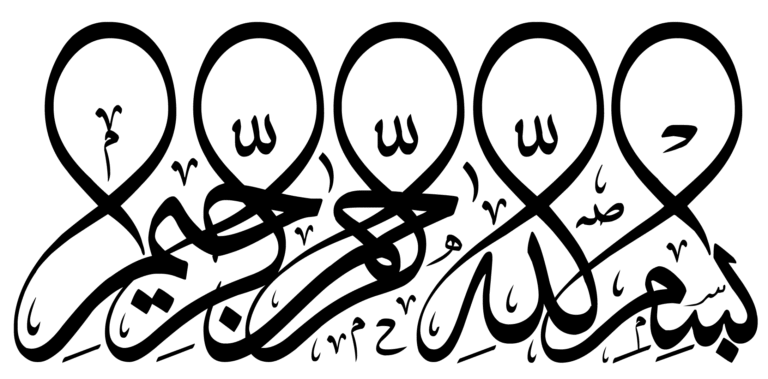

لَآ أُقۡسِمُ بِهَٰذَا ٱلۡبَلَدِ (1) وَأَنتَ حِلُّۢ بِهَٰذَا ٱلۡبَلَدِ (2) وَوَالِدٖ وَمَا وَلَدَ (3) لَقَدۡ خَلَقۡنَا ٱلۡإِنسَٰنَ فِي كَبَدٍ (4) أَيَحۡسَبُ أَن لَّن يَقۡدِرَ عَلَيۡهِ أَحَدٞ (5) يَقُولُ أَهۡلَكۡتُ مَالٗا لُّبَدًا (6) أَيَحۡسَبُ أَن لَّمۡ يَرَهُۥٓ أَحَدٌ (7) أَلَمۡ نَجۡعَل لَّهُۥ عَيۡنَيۡنِ (8) وَلِسَانٗا وَشَفَتَيۡنِ (9) وَهَدَيۡنَٰهُ ٱلنَّجۡدَيۡنِ (10) فَلَا ٱقۡتَحَمَ ٱلۡعَقَبَةَ (11) وَمَآ أَدۡرَىٰكَ مَا ٱلۡعَقَبَةُ (12) فَكُّ رَقَبَةٍ (13) أَوۡ إِطۡعَٰمٞ فِي يَوۡمٖ ذِي مَسۡغَبَةٖ (14) يَتِيمٗا ذَا مَقۡرَبَةٍ (15) أَوۡ مِسۡكِينٗا ذَا مَتۡرَبَةٖ (16) ثُمَّ كَانَ مِنَ ٱلَّذِينَ ءَامَنُواْ وَتَوَاصَوۡاْ بِٱلصَّبۡرِ وَتَوَاصَوۡاْ بِٱلۡمَرۡحَمَةِ (17) أُوْلَٰٓئِكَ أَصۡحَٰبُ ٱلۡمَيۡمَنَةِ (18) وَٱلَّذِينَ كَفَرُواْ بَِٔايَٰتِنَا هُمۡ أَصۡحَٰبُ ٱلۡمَشَۡٔمَةِ (19) عَلَيۡهِمۡ نَارٞ مُّؤۡصَدَةُۢ (20)